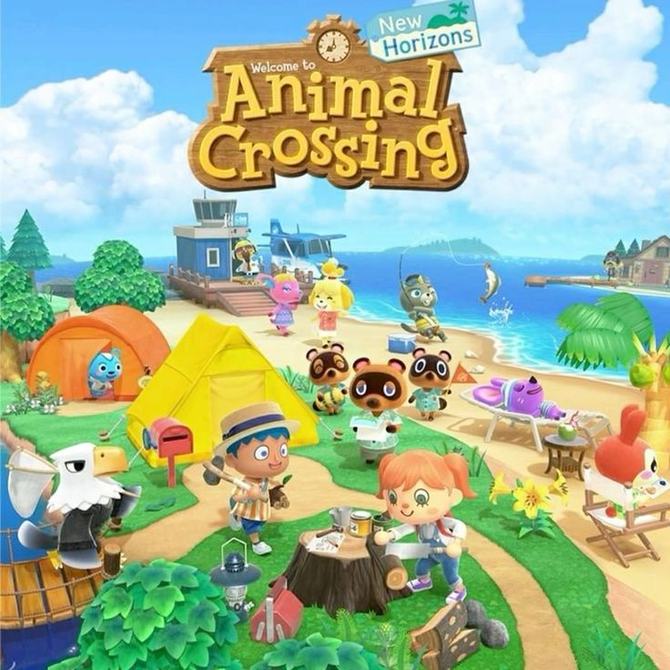
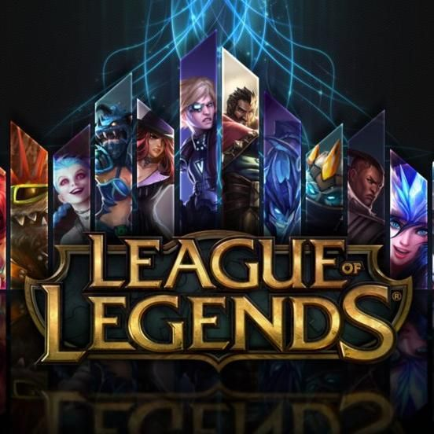
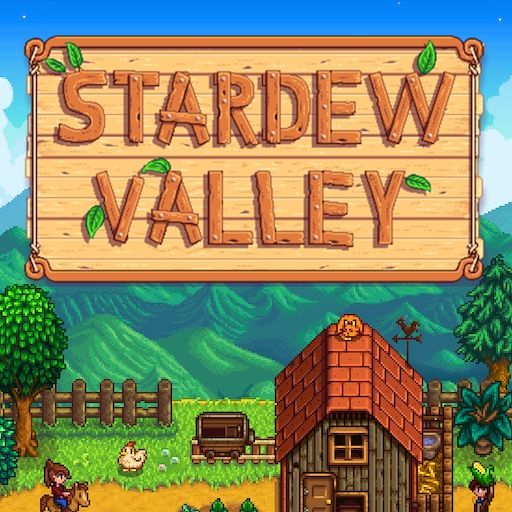

Minecraft
Um dos jogos mais influentes da história, conhecido por liberdade criativa, construção e forte presença entre jovens e adultos.
jogos • tecnologia • imaginação
Os jogos digitais criam comunidades, hábitos e repertórios que atravessam gerações.
Os games são uma importante forma de produção cultural porque misturam narrativa, imagem, música, tecnologia e interação. Eles influenciam comportamentos, reúnem comunidades e revelam como o entretenimento digital também constrói identidade.
Os games combinam tecnologia, design, narrativa e comunidade. Eles geram tendências, influenciam criação de conteúdo e constroem espaços de pertencimento para públicos de diferentes idades.
Um dos jogos mais influentes da história, conhecido por liberdade criativa, construção e forte presença entre jovens e adultos.

Explora fantasia, mundo aberto e estética marcante, consolidando-se como fenômeno global entre os jogos contemporâneos.

O jogo transforma o cotidiano em narrativa e permite criar histórias, casas e relações, aproximando simulação e cultura pop.

Conhecido pela atmosfera acolhedora, pelo ritmo calmo e pela comunidade engajada que se formou em torno da experiência.

Um dos jogos mais populares do cenário competitivo, ligado a e-sports, criação de conteúdo e cultura global online.

Jogo que mistura rotina, acolhimento e construção de comunidade, mostrando que games também podem ser sensíveis e contemplativos.
Os games mostram que a cultura digital é feita de encontros, histórias e estilos de vida. Jogar também é uma forma de participar do imaginário coletivo contemporâneo.